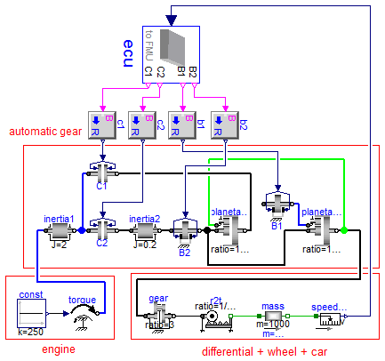
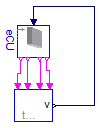

Same as model AutomaticGearbox, but with the additional difficulty, that dynamic state selection takes place during simulation
Extends from Modelica.Icons.ExamplesPackage (Icon for packages containing runnable examples).
| Name | Description |
|---|---|
| Reference solution in pure Modelica | |
| Reference solution in pure Modelica using exactly the same structuring as in Model WithFMUs | |
| Solution with FMUs | |
| For all models in this package an FMU must be generated |
 FMITest.MixedSystems.AutomaticGearboxWithDynamicStateSelection.Reference
FMITest.MixedSystems.AutomaticGearboxWithDynamicStateSelection.Reference
Reference solution in pure Modelica

Extends from FMITest.MixedSystems.AutomaticGearbox.Reference (Reference solution in pure Modelica).
| Type | Name | Default | Description |
|---|---|---|---|
| Force | fn_max | 1000 | [N] |
FMITest.MixedSystems.AutomaticGearboxWithDynamicStateSelection.WithFMUsReference
Reference solution in pure Modelica using exactly the same structuring as in Model WithFMUs

Extends from Modelica.Icons.Example (Icon for runnable examples).
FMITest.MixedSystems.AutomaticGearboxWithDynamicStateSelection.WithFMUs
Solution with FMUs

Extends from Modelica.Icons.Example (Icon for runnable examples).